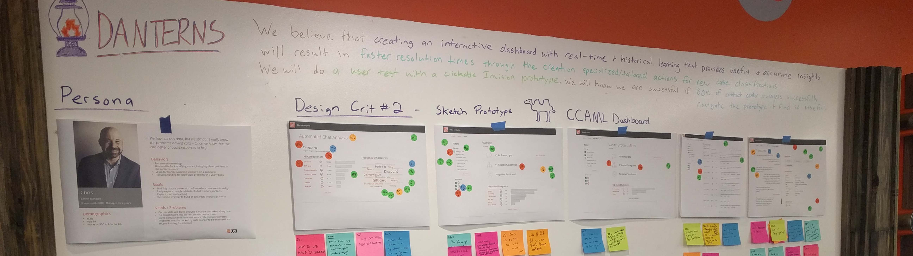
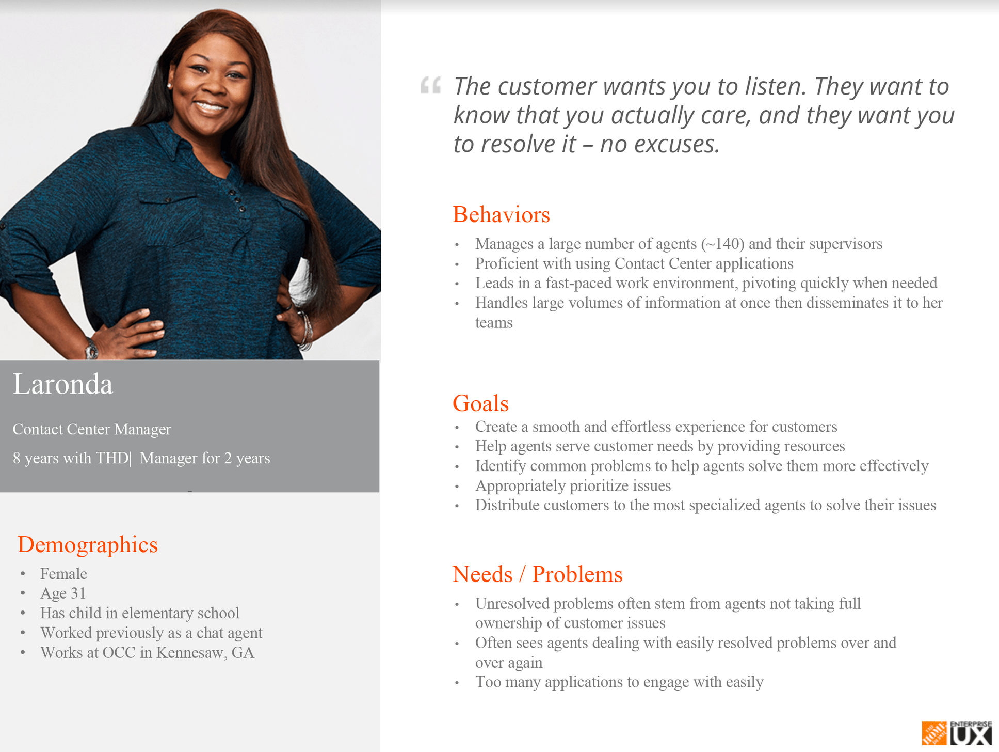
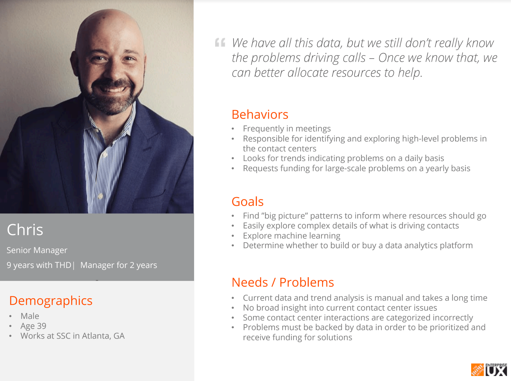
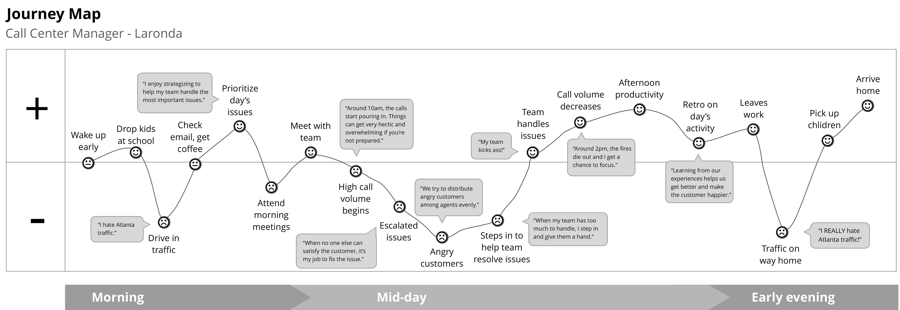

Lantern - Chat Data Analytics Dashboard
June - Aug 2017
The Problem
Contact center data was plentiful, but gathering and analyzing it was time and labor-intensive. Senior managers did not know about issues until long after they occur and are reported up the chain, making them late to allocate resources.
The Solution
Lantern enables quick discovery and analysis of issues. It aggregates contact center transcripts into trending issues. Categories and sentiment labels, determined through machine learning, further expand filtering and search capabilities.
Project Details
Team:
7 interns - 1 UX designer, 2 front-end developers, 4 back-end developers (distributed team)My role:
Research & DesignProcesses:
Hypothesis generation, leap of faith assumptions, personas, journey map, feature 2x2, contextual inquiry, interviews, mind mapping, card sorting, affinity mapping, sketching, design studio, design critique, prototyping, usability testing{kind=link}
Process
Kickoff & Discovery
A contact center manager proto-persona and journey map were created during kickoff. The full team went through hypothesis generation and leap of faith assumptions to identify areas of risk. We created a feature 2x2 to identify the most valuable features that could solve our user's problem.
{kind=link}
{kind=link}
{kind=link}
For discovery, we went to The Home Depot contact centers to conduct contextual inquiry and user interviews. In the process of this research, we found that senior managers at the Store Support Center would get more value out of our analytics tool than managers at the contact center. We pivoted to focus on our new persona.
  {kind=link}
{kind=link}
{kind=link}
Design & Iterate
After discovery and creating our persona, we ran several rounds of design studios and design critiques to refine our idea.
Following our first design studio, we used a paper prototype for the design critique. Implementing that feedback, I then made digital mockups. After another round of design critique, we felt the mockups were ready to move onto interactive prototyping and user testing.
{kind=link}
{kind=link}
{kind=link}
{kind=link}
Usability Testing
We defined our success metrics at kickoff as "80% of users can successfully navigate the prototype and find it useful." I created a prototype focused around 2 different scenarios with 2 tasks each. A third party faciliator issued the test in a separate room while the team observed remotely. Following the test, participants completed a card sorting activity to rate their experience.
Upon completion of testing, we had met our metric for success. I documented the final testing, along with all other research, in The Home Depot internal research database for future teams to make use of.
{kind=link}
Reflection
This was a fun and valuable project to work on. I got the chance to complete the entire product creation process, from discovery to delivery and validation. I enjoyed creating a product that helps make other people's jobs easier.
This project also helped shape my view of user research. The persona pivot after discovery was a key underscoring of why research to validate assumptions is so important.